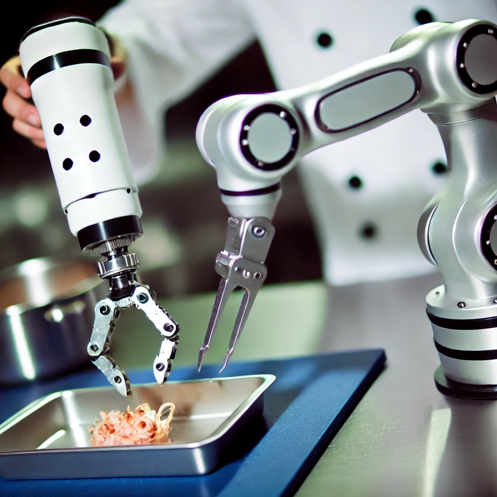
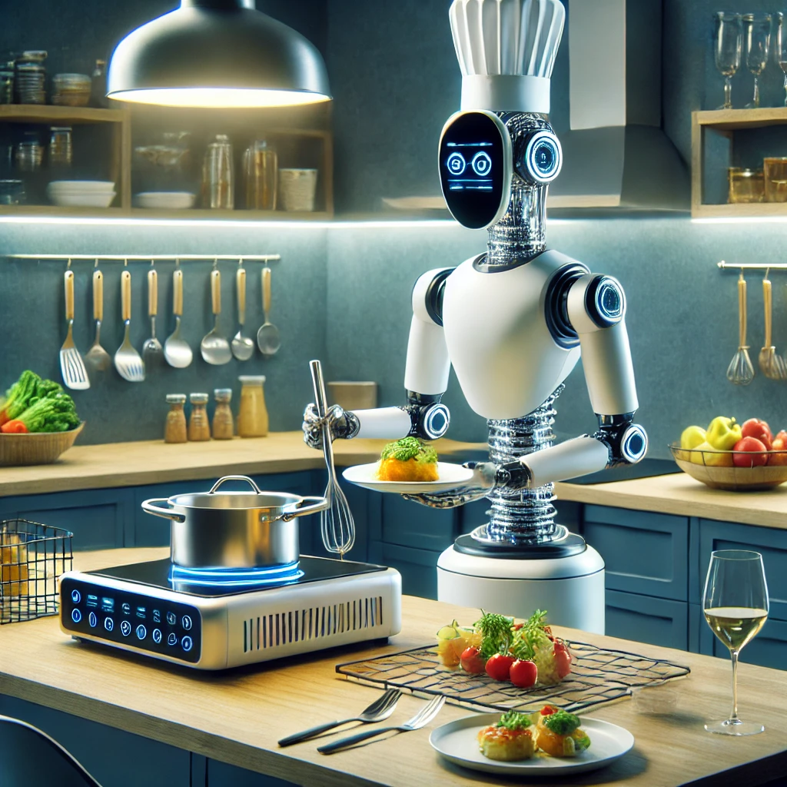
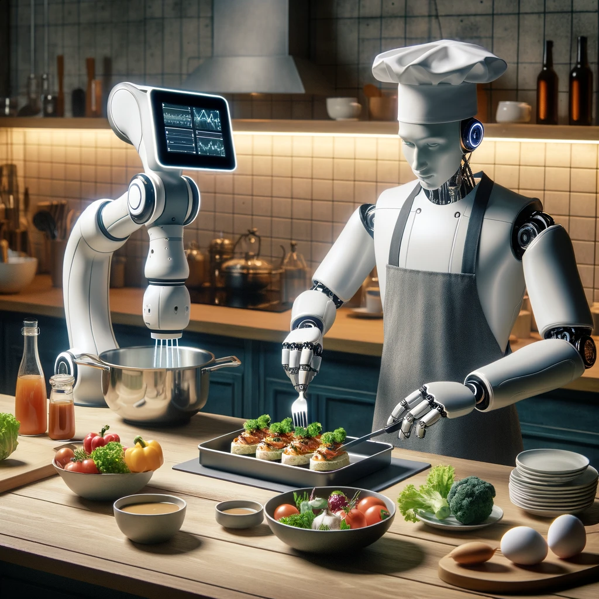

Il Futuro della Cucina: Robot Chef
I robot chef stanno rivoluzionando il mondo della cucina. Questi dispositivi innovativi sono in grado di preparare piatti complessi con precisione e velocità, portando la tecnologia culinaria a nuovi livelli.
Come Funzionano i Robot Chef
I robot chef utilizzano braccia robotiche avanzate per manipolare gli ingredienti, seguendo ricette programmate. Sono dotati di sensori che permettono loro di monitorare la cottura e assicurare che ogni piatto sia perfetto.
Vantaggi dei Robot Chef
L'uso di robot chef offre numerosi vantaggi, tra cui l'aumento dell'efficienza in cucina e la riduzione degli sprechi alimentari. Questi robot possono lavorare instancabilmente, garantendo consistenza e qualità in ogni piatto.
Inoltre, i robot chef possono aiutare a ridurre i costi operativi nei ristoranti, permettendo al personale umano di concentrarsi su compiti più creativi e strategici.